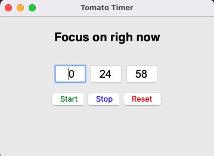

造轮子的快乐 - 我的番茄钟
Posted on Mon 29 January 2024 in Journal
| Abstract | 造轮子的快乐 - 我的番茄钟 |
|---|---|
| Authors | Walter Fan |
| Category | learning note |
| Status | v1.0 |
| Updated | 2024-01-29 |
| License | CC-BY-NC-ND 4.0 |
工业界有句俗语 - "不要重复造轮子", 轮子早就发明出来了, 圆圆的, 有轮毂, 有轮胎, 各种各样的都有, 何必自己再重复造轮子呢?
可是程序员就不信这个邪, 就喜欢重复造轮子, 别人的轮子再好, 也不如自己造的顺手, 比如番茄钟, 我以前就写过一个 python 版本的, 代码很简单, 参见 git@github.com:walterfan/tomato-timer.git

其实代码没多少, 也就 120 行
#!/usr/bin/env python3
import time
from datetime import datetime, timezone
from tkinter import Tk, StringVar, Entry, Label, Button, ttk, messagebox
from playsound import playsound
DEFAULT_MINS = 25
TIME_FORMAT = "%Y-%m-%d %H:%M:%S"
class TomatoTimer:
def __init__(self, title = "Tomato Timer", frameSize="360x240"):
self._root = Tk()
self._style = ttk.Style()
self._style.theme_use('alt')
self._root.geometry(frameSize)
self._root.title(title)
self._hour=StringVar()
self._minute=StringVar()
self._second=StringVar()
self.init_ui()
self._started = False
self._tomato_count = 0
def set_time(self, hour=0, min=DEFAULT_MINS, sec=0):
self._hour.set("{0:2d}".format(hour))
self._minute.set("{0:2d}".format(min))
self._second.set("{0:2d}".format(sec))
def create_time_box(self, label):
return Entry(self._root, width=4,font=("Arial",18,""), justify='center', textvariable=label)
def init_ui(self):
self.set_time()
x_value = 90
y_value = 80
x_step = 60
hour_box = self.create_time_box(self._hour)
hour_box.place(x=x_value, y=y_value)
x_value += x_step
mins_box = self.create_time_box(self._minute)
mins_box.place(x=x_value,y=y_value)
x_value += x_step
sec_box = self.create_time_box(self._second)
sec_box.place(x=x_value,y=y_value)
label = Label(self._root, text= "Focus on righ now",font=('Helvetica bold', 20))
label.pack(pady=20)
y_value += 40
btnStart = Button(self._root, text='Start', bd='5', fg="green", command= self.countdown)
btnStart.place(x = 80,y = y_value)
btnStop = Button(self._root, text='Stop', bd='5', fg="blue", command= self.pause)
btnStop.place(x = 140,y = y_value)
btnReset = Button(self._root, text='Reset', bd='5', fg="red", command= self.reset)
btnReset.place(x = 200,y = y_value)
def stay_on_top(self):
self._root.lift()
self._root.after(300_000, self.stay_on_top)
def run(self):
self.stay_on_top()
self._root.mainloop()
def reset(self):
self._started = False
self.set_time()
def pause(self):
self._started = False
def get_hour_min_sec(self, left_seconds):
mins,secs = divmod(left_seconds, 60)
hours=0
if mins > 60:
hours, mins = divmod(mins, 60)
return hours, mins, secs
def countdown(self):
self._started = True
try:
left_seconds = int(self._hour.get())*3600 + int(self._minute.get())*60 + int(self._second.get())
except:
messagebox.showwarning('', 'Invalid Input Value!')
while self._started:
hours, mins, secs = self.get_hour_min_sec(left_seconds)
self.set_time(hours, mins, secs)
self._root.update()
time.sleep(1)
if (left_seconds == 0):
self._tomato_count += 1
print("It is time: {}, count={}".format( datetime.now().strftime(TIME_FORMAT),self._tomato_count))
playsound('starlet.wav', block = False)
break
left_seconds -= 1
if __name__ == '__main__':
timer = TomatoTimer()
timer.run()
本作品采用知识共享署名-非商业性使用-禁止演绎 4.0 国际许可协议进行许可。